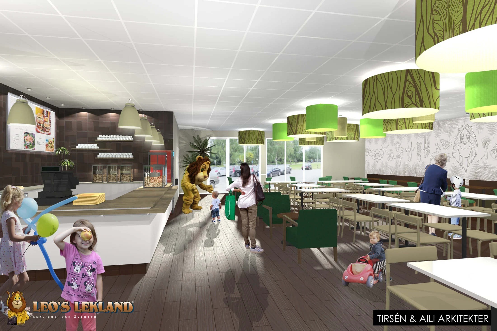

Leos Lekland
Offentliga byggnader

Ett långvarigt samarbete kring lekland och restauranger i Sverige, Norge, Danmark, Finland och Tyskland.
- Byggnadstyp
- Offentliga byggnader
- Projektår
- 2008 (startår)
- Beställare
- Leos Lekland
- Plats
- Luleå
Projektuppgifter och bildmaterial från Stark Arkitekters projektarkiv. Årtal avser uppgifterna i originalpresentationen.